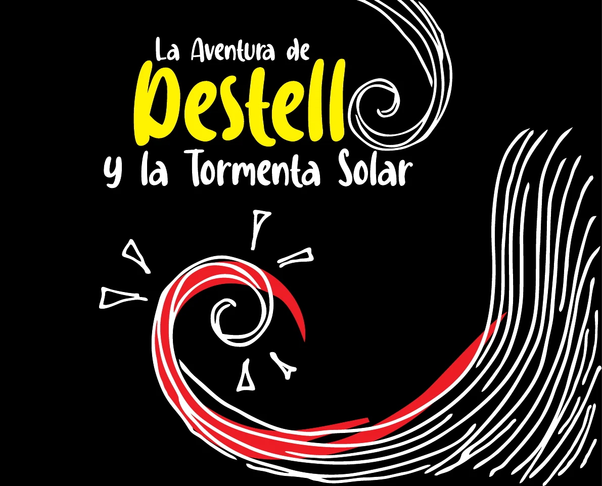

Lectura pública y accesible
El cuento se presenta en páginas grandes, con controles sencillos, navegación por teclado y opción de lectura continua.
Cuento digital
Una experiencia web para que niñas, niños, familias y docentes puedan leer el cuento desde cualquier dispositivo.

El cuento se presenta en páginas grandes, con controles sencillos, navegación por teclado y opción de lectura continua.
Puedes subir esta carpeta a Vercel, Netlify, GitHub Pages o cualquier hosting estático.
También se conserva el PDF descargable para impresión, archivo o distribución escolar.
Lector web
Usa las flechas, los botones o el teclado para avanzar página por página.
Página 1 de 24
Créditos
Escrito e ilustrado por alumna de la Preparatoria n.º 23 “Jacob Nájera Hernández”, Estado de Guerrero, 2025. Todos los derechos reservados.